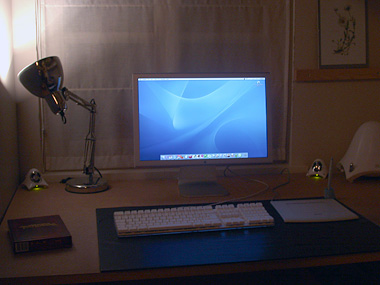

Cinema Display 20″
woensdag 27 oktober 2004 | Apple
Twee avonden zit ik nu al met mijn neus voor de nieuwe Apple Cinema Display 20″. Moet ik u nog vertellen dat de beeldkwaliteit fe-no-me-naal is? Het werken op een scherm dat opvallend breder is dan hoog (16:9 formaat) bevalt me trouwens veel beter dan verwacht. Ik zou de 600 pixels extra in de breedte en de 25 pixels in de hoogte al niet meer kunnen missen. Je moet dit gewoonweg zien om te geloven…

Ben op 28 oktober 2004
Fantastisch gewoon. Ik kan me inbeelden dat dit een grote meerwaarde biedt bij het werken met programma’s met veel drijvende vensters (Photoshop comes to my mind).
Ik kan me voorstellen wat er gebeurt als je met zo’n scherm films bekijkt… :-)